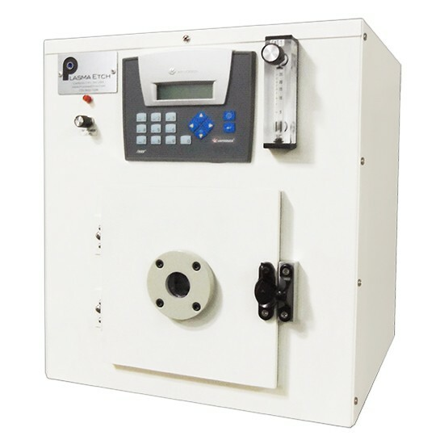

01with any phone
Record your expert
Film the person who knows the machine best, narrating as they work — seconds to hours. No special equipment, no staging, no script.
REC 00:00:42
Record your best operator using a machine once. Instrukt turns that video into a guided, step-by-step 3D walkthrough your whole team can follow at the equipment itself — so every run is consistent, and every run is reproducible.

No manuals to write, no cameras to rig, no specialists to schedule. If you can film it, your team can learn it.
Film the person who knows the machine best, narrating as they work — seconds to hours. No special equipment, no staging, no script.
Upload the footage and tell Instrukt which parts move — the door, the sample holder, the latch. That's the entire setup.
Instrukt hands back an interactive model of your instrument with its moving parts, plus the full procedure as a step-by-step walkthrough — ready to share with the team.
Trainees open the walkthrough right at the equipment: the camera moves to each action, parts glow, callouts point — and every step checks off as they go.
A live slice of the viewer: drag the model, step through the procedure, tick the checks. Every step knows which part it touches and where the camera should look.
Lift the lid by its front edge until it stays open on the hinge.
Lab knowledge shouldn't live in one person's head — or in a binder nobody opens. Instrukt makes every procedure consistent and reproducible for the whole team.
New hands follow a guided walkthrough at the machine itself — which part, which motion, which check — instead of shadowing a senior researcher for weeks.
The procedure is captured once from the person who knows it best, then replayed identically for everyone. No drift, no folklore, no skipped latch checks.
When the "which button comes next" questions disappear, attention goes back to where it belongs: the experiment and the results.
A living lab book — one that watches how the expert does it, and walks everyone else through it, one action at a time.
Anywhere expertise is scarce and mistakes are expensive, Instrukt turns your best operator into a trainer who never sleeps.
Onboard interns and new hires onto complex instruments without tying up senior researchers — procedures stay consistent long after the expert moves on.
Standardize how every shift runs the same machine. Capture the workflow once, replay it identically across sites, lines, and teams.
Every step is followed in order, every check is ticked off. Walkthroughs double as auditable training records for regulated environments.
Ship every unit with a living guide instead of a PDF. Customers and technicians learn your machine the way your engineers use it.
One video in — a navigable 3D model and a step-by-step guide out. Your next procedure is one recording away.